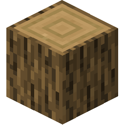

Beekeeping
Bees are a wild insect that can be farmed as livestock. They are prized for their ability to produce honey, beeswax, and other products. All bees need to live in some form of nest. This section will teach you all you need to know for the care and keeping of bees.
Wild Beehive
Wild beehives spawn in forests between 5-30°C and 150-450mm of groundwater.
Bees, in general, are active above 14°C. A Wild Beehive will always contain bees upon world generation, and will not lose the bees unless disturbed. If time has passed and the bees are active, the wild beehive will show that it is dripping with honey.
Breaking a wild beehive or the tree it is attached to will always cause bees to attack nearby players. This takes the form of a Swarm effect. The bee swarm effect can be mitigated by wearing a full suit of Bee Armor or by moving underwater. Wild beehives drop Honey, Beeswax, and the useful Wild Honeycomb item.


The Skep is the smallest man-made beehive.
The most useful feature of the skep is that it can be picked up and moved by the player. However, the player can only carry one skep at a time without becoming Overburdened. If a wild beehive within 15 blocks is active, within a day it should start a Swarm. A swarm is signified by a line of particles between two beehives.
When a swarm is complete, the skep will now contain a Queen. Holding a hoe and looking at the hive will show you this information. The Queen represents the existence of a bee colony, and she has a number of data points: her age, species, traits, as well as any diseases or infections the colony has.
On their own, skeps are only moderately useful for maintaining bees. This is because skeps can only contain 1 piece of honey at a time. Raw Honey can be added or removed from a skep with Right Click. Note that to avoid angering bees, you should harvest only when it is dark outside.
Wooden Beehives are the main device used for beekeeping. They contain up to four Frames. A frame can contain 1 piece of Raw Honey in it. To get your bees into a Wooden Beehive, place your Skep with a queen inside within 5 blocks of it, and make sure the beehive has at least one frame, and that it is warm enough. The swarm will follow soon after, and last for a day.
Beehives know about a 5 block square radius surrounding the hive. In order to produce honey, this radius must contain at least 10 flowers. The chance of producing honey scales up based on the amount of flowers, with a max of 60. Bee traits also play a role in the chance to make honey. Honey can only be deposited in an Empty Beehive Frame.

Scraping a beehive frame (right clicking the item with a knife also works) makes Beeswax.
The Centrifuge is used to process Scraped Beehive Frames into Raw Honey.
The Centrifuge can be operated via Right Click or via mechanical power from an axle above the block. Right Click to put Scraped Beehive Frames in. Raw Honey will be spawned outside the Centrifuge upon completion. The leftover frames can be reused in a Beehive.

Bees don't just produce honey for you, they produce it to survive! When bees have no frames available, or if it is too cold (read the hoe tooltip to see) they will consume honey every 12 days by default. When they are out of honey, they have a chance every day to die.
Sugared Beehive Frames as well as manually-filled Filled Beehive Frames can be manually added into hives to help sustain bees over winter. This is why skeps have trouble surviving over winter--they can only contain one piece of honey, and have no frames.
Adding a Insulating Beehive Frame adds 2°C of extra temperature resistance to a hive. Adding multiple has no further effect.
Colonies can still Swarm from Wooden Beehives. The beneficial type of swarming involves Splitting a hive. A hive that is at least 24 days old (by default), warm, full of honey, and free of Genetic Diseases can split into two new colonies if a nearby hive is available. This also results in Genetic Mutation.
Swarming can also be caused by a lack of food in the hive. If a hive sees another hive with honey, and lacks its own, it will in some cases try to swarm to that hive. Bees infected with the Varroa parasite will also attempt to invade other hives, taking them over.
If no wild bees are available, bees can also be attracted to Skeps via Bee Bait. This takes the form of Wild Honeycomb and Aromatic Honeycomb. Add these to a Skep with Right Click and surround the Skep with at least 30 flowers. There is a 1 / 8 chance daily to attract a bee in this case.
The Aromatic Honeycomb is an alternative to the Wild Honeycomb made from herbs.

Honey lasts forever if stored in a Jar.
This chapter covered the main aspects of beekeeping. For information on species, traits, genetic diseases, and parasitic infections, see the next chapter, Beekeeping Reference.